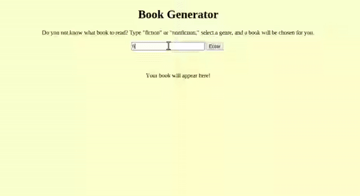

For my project I coded a book generator that recommends a novel based on the user's genre choice. I used HTML and JavaScript.
In my project, the user starts by typing in "fiction" or "nonfiction" into the
search bar. To create the search bar and button, I used HTML. I programmed the code
<input id="ficOrNonFic"> and gave it an id of "ficOrNonFic."
The button is called by the code
<button id="submitFictionType"> Enter </button>. The "Enter"
part of the line of code is what the button text displays. Both attributes will be useful when
coding in JavaScript.
In JavaScript, I started by declaring each id from the
HTML file as variables. To do this, I used document.getElementById.
The "Enter" button is "listening" for the event of a user's click. When they do click
enter, the computer processes the input that the user typed. Using the if/else statement, if it was
"fiction" or "Fiction" the fiction drop down menu will appear. I wanted it to be less case-sensitive,
so I added two choices. If the user input was something else (hypothetically, "nonfiction"),
the nonfiction drop down will appear.
Depending on if you picked fiction or nonfiction, a different
drop down menu will appear. These can be seen to the right on the HTML file. The
option tags program the different genres. For example, if you decided to type fiction, you
would have the options of fantasy, sci-fi, drama, or graphic novel. Your selection will be
stored in the JavaScript variable ficType, since it is equal to ficOrNonFic.value,
or whatever the user selected in the drop down menu. Say you clicked science fiction. The computer
will run through the if statements in fictionDropDown.addEventListener("click", function(){.
If ficType, or science fiction, is equal to the choice "Science Fiction," the book Flowers for Algernon
will be generated. The .link() attaches a Goodreads link to the string, since unlike HTML, you can't
use hyperlinks in JavaScript. The code is very similar for the nonfiction books.
I decided to use these fiction books in particular because they are some of my favorites. (They are so good that I cried while reading 3/4 of them haha.) The nonfiction, however, I have never read, but I have heard of them before. Washington's Spies: the Story of America's First Spy Ring was an easy choice for me to make because my favorite Netflix series TURN: Washington's Spies is heavily based on the book.